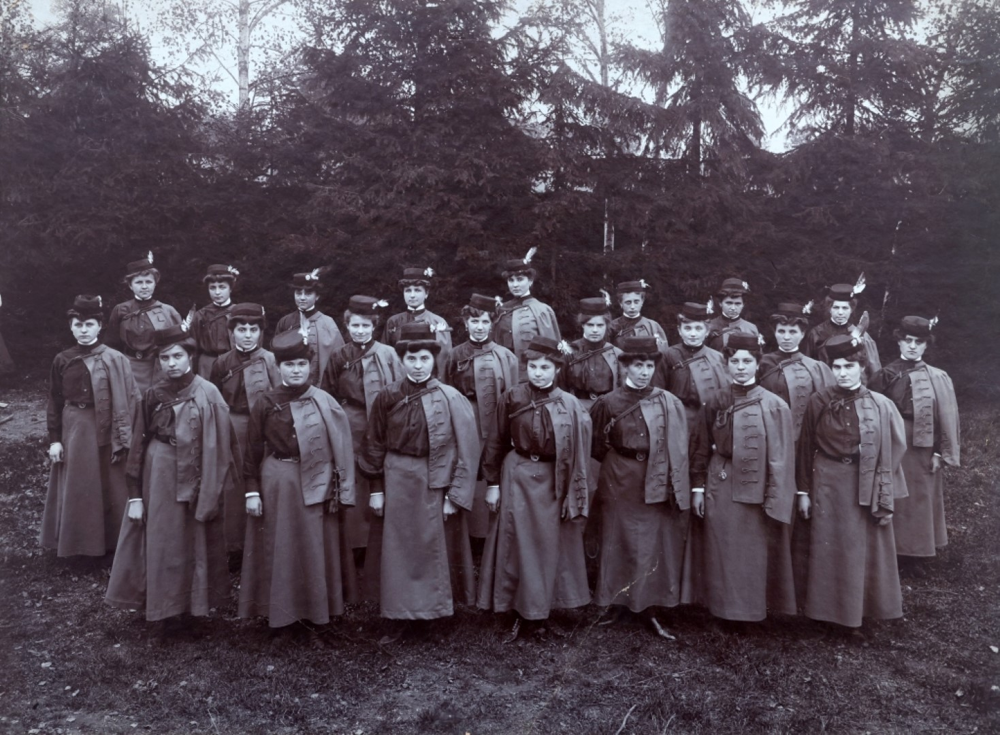
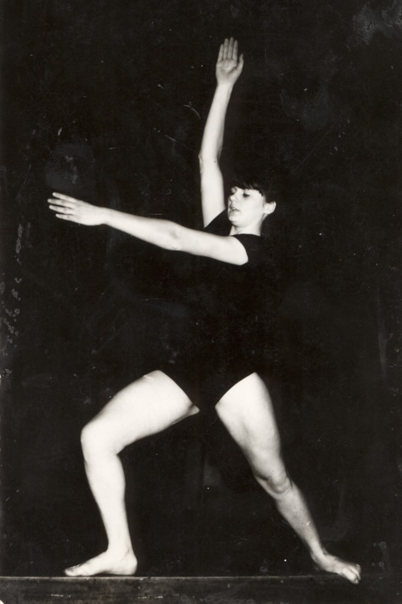

Gimnastika
KRONOLOGIJA
1864.
izgrađeno gombalište na otvorenom prostoru u dvorištu Svilane (ulica Tina Ujevića)
1. 3. 1878.
osnovano Društvo za tjelovježbu Varaždinski sokol


Pravila Društva za tjelovježbu Varaždinski sokol, Varaždin, 1882., GMV PO 3226
1896.
sagrađena gradska gombaona na današnjem igralištu Srednjoškolac
Varaždinske sokolašice ispred gradske gombaone, Varaždin, 1938., GMV 85492
21. 12. 1901.
pokrenut rad Hrvatskog sokola
Poziv građanima da se učlane u Hrvatski sokol, Varaždin, 1902., GMV KPO 12714
13. 7. 1902.
prva javna vježba Hrvatskog sokola

Raspored I. javne vježbe Hrvatskog sokola u Varaždinu, Varaždin, 1902., GMV KPO 4372
2. i 3. 9. 1906.
Hrvatski sokol sudjelovao na I. svesokolskom sletu u Zagrebu
Vrsta natjecatelja Hrvatskog sokola na I. hrvatskom svesokolskom sletu, Zagreb, 1906., GMV 98620
1906.
ustrojen ženski odjel Hrvatskog sokola, Sokolica

Članice Hrvatskog sokola u Varaždinu, Varaždin, 1906., GMV 98621
1907.
Hrvatski sokol sudjeluje na V. svesokolskom sletu u Pragu
1908.
gombanje obavezni nastavni predmet u Gimnaziji
1912.
Oto Šantel sudjeluje u natjecanjima svesokolskog sleta u Pragu
1919.
obnovljen rad Hrvatskog sokola
2. 4. 1922.
nastaje Sokolsko društvo Varaždin
1931.
na igralištu ŠK Slavija uređen i dio s gimnastičkim spravama
Gimnastička akademija Hrvatskog sokola Varaždin na Pavlinskom marofu, Varaždin, 1929., GMV 99152/1
1948.
Sokolsko društvo mijenja ime u Gimnastičko društvo Varaždin
1948.
gimnastičar Stjepan Boltižar sudjeluje na OI u Londonu
1952.
gimnastičar Ivan Čaklec sudjeluje na OI u Helsinkiju
1956.
juniorke DTO Partizan prvakinje Hrvatske
1957.
Ivan Čaklec brončani na Prvenstvu Europe, konj s hvataljkama
1960.
Ivan Čaklec sudjeluje na OI u Rimu
1964.
Ivan Čaklec sudjeluje na OI u Tokiju
1966.
gimnastičar Stjepan Stolnik prvak Hrvatske
1983.
ritmička gimnastičarka Davorka Čorko druga na Prvenstvu Hrvatske

Davorka Čorko, GMV 106528
1984.
seniorke na republičkom prvenstvu u Varaždinu osvojile prvo mjesto (Dubravka Drk, Davorka Čorko, Nataša Remar,Nina Orešković)
Nina Orešković u vježbi s čunjevima, GMV 106529
25. - 26. 5. 1985.
20. Prvenstvo SR Hrvatske u ritmičko sportskoj gimnastici
Plakat 20. prvenstva SR Hrvatske u ritmičko sportskoj gimnastici, GMV 104811
1991.
ritmička gimnastičarka Rosana Stolnik seniorska prvakinja Hrvatske
1998.
Državno prvenstvo u Varaždinu